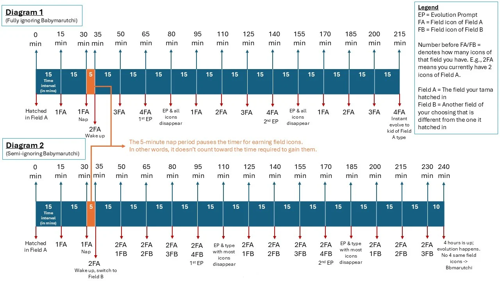

Some of you would have probably heard of the trick of evolving Babymarutchi to Bbmarutchi, which is to switch fields every 14 minutes (not exceeding 15 mins), to avoid gaining field cells. After 4 hours of repeating this, since there are no field cells, it evolves into Bbmarutchi.
Then I heard some rumors going around that some people also got Bbmarutchi via an easier way, which is by just ignoring their Babymarutchi, but when I tried that it didn’t work. I got frustrated at this misinformation and nobody could give me more details into how they actually “ignored” their baby, so I spent weeks experimenting with different scenarios, and I finally got it!
Logic:
Your Babymarutchi will always evolve under one of these three conditions:
- When the user chooses to evolve when the evolution prompt appears.
- When two evolution prompts are skipped, and it gains four of the same field icons again.
- After four hours have passed since hatching.

Why ignoring your Babymarutchi completely won’t get Bbmarutchi
Because doing so actually triggers Condition 2. Here’s what happens according to Diagram 1:
- You gain one field icon every 15 minutes, except during nap time (between the 30th and 35th minute). The 5-minute nap period pauses the timer for earning field icons — in other words, it doesn’t count toward the time required to gain them.
- At the 65-minute mark, the first evolution prompt appears. Ignore it, and it disappears after 15 minutes.
- You’ll continue gaining one field icon every 15 minutes until the 125-minute mark, when the second evolution prompt happens. Ignore that too, and it disappears again.
- By the 215-minute mark (3 hours 35 minutes), your Babymarutchi will have accumulated four of the same field icons again. Since two evolution prompts were skipped before, it will instantly evolve without prompting — but because you’ve got four matching icons at that point, it will evolve into a child of that field type, not Bbmarutchi.
The correct way to get Bbmarutchi is to semi-ignore it
Bbmarutchi only appears under Condition 3. That means you must avoid both Conditions 1 and 2 — so you’ll need to ignore your Babymarutchi entirely (including evolution prompts), but also switch fields once to prevent four identical field icons from stacking up.
Here’s how (refer to Diagram 2):
- At about 35 minutes after hatching (right after the nap), switch to a different field. You should already have two field icons by then.
- Between the 50-minute and 65-minute marks, you’ll gain two icons from the new field. If you had followed Diagram 1, an evolution prompt would appear here, but since you don’t have four matching icons, it won’t trigger.
- In the next 30 minutes, you’ll collect two more icons from that same field. At the 95-minute mark, you’ll now have four identical icons — your first evolution prompt. Ignore it.
- At 110 minutes, that prompt disappears and the icons of the field type with the highest count will disappear.
- Continue ignoring everything. At 170 minutes, you’ll get your second evolution prompt. Ignore that too.
- By 185 minutes, the second prompt disappears, leaving only 55 minutes before the 4-hour mark.
Since it takes 15 minutes to earn one field icon, you’ll only collect three before 4 hours are up — not four. When the 4-hour mark hits, your Babymarutchi must evolve. Because it doesn’t have four matching icons, it evolves into Bbmarutchi.
TL;DR
After 35 minutes (right after the nap) of hatching, switch fields once, then ignore your Babymarutchi completely. At the 4-hour mark, it will evolve into Bbmarutchi.
Of course, you don't have to ignore it exactly at the 35 minute-mark; it's just easier to remember it this way. The key is to manage the icon accumulation strategically so that it never reaches four icons at any time during the 4-hour period. If you do that, you’ll get Bbmarutchi.